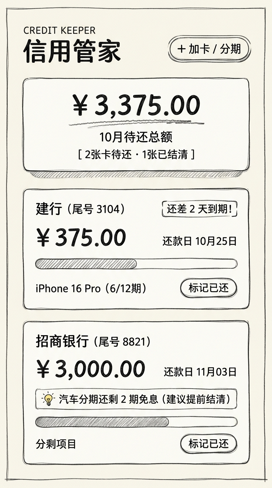

传统信用卡工具，
往往切错了真正的高频痛点。
市面上的信用卡管理工具，大多停留在“今天刷哪张卡免息期最长”的浅层决策，或者试图做成大而全的传统记账软件。 然而现实生活中，持卡人真正感到心智负担沉重、极易产生逾期罚息与额外利息的场景，其实是多张信用卡上的各类大额分期计划：
还款日程错位
每张卡账单日与还款日各不相同，不同分期每期扣款额零散分散，极容易遗漏其中一张导致征信污点与罚息。
分段贴息无法统计
汽车贴息贷、家装贷款常见“5 年期分期，前 2 年免息免手续费，后 3 年收息”，传统均摊记账工具直接抓瞎。
错过特殊提前结清节点
由于记不清哪一期是免息截止日，未在关键期数全额提前结清，白白被银行收取数万元后续手续费与利息。
负债总额不透明
记不清每笔分期“已还到第几期、还剩多少期”，难以对未来几个月的固定偿还支出有准确的现金流预估。
因此，产品定位从最初的“泛记账/免息期助手”，精准聚焦为：“多卡分期计划清晰追踪与还款节点预警的极简管家”。
业务模型创新：
支持分段式分期与提前结清试算。
针对“前 N 期免息，后 M 期收息”的行业普遍规则，分期管家抽象出了支持阶段策略的灵活数据模型：
- 分段月供定义：阶段一（免息期，仅还纯本金，如 ¥3,000/月）与阶段二（计息期，包含利息，如 ¥3,580/月）。
- 智能提前还款预警：在关键转折期（如第 24 期）到期前 1~2 期，系统主动弹出强预警横幅，提示用户及时结清。
- 利息节省精算：自动测算若在免息终点全额结清，后续能省下多少手续费（例如直接计算出“提前结清可省下后续 36 期利息约 ¥20,880 元”）。
- 手动履约确认机制：用户在微信小程序内手动点击“标记已还”，当期状态结清且期数自动
+1，既有确定感又避免系统擅自推进。
视觉风格定稿：
铅笔手绘排线风 (Pencil Sketch Style)。
在探索了 Editorial 杂志风、极简黑白、Soft Utility 与涂鸦手绘等多种视觉方向后，最终选定了兼具亲和力、手工记账温度与秩序感的铅笔手绘排线风 (Sketch Style)：

- 纸张底色：温暖亲和的微米白背景 (
#FAF9F5)，还原实体手账质感。 - 石墨描边：统一的
2rpx ~ 3rpx深炭灰笔触 (#374151)。 - 45° 铅笔排线 (Sketch Hatching)：分期已还进度条与状态指示采用细腻的 45 度手绘排线纹理。
- 物理微触感：按钮与卡片点击时具备真实按压物理反馈 (
active: translate(1px, 1px)与阴影内收)。 - 视觉圆角铁律：采用温和的大圆角 (
28rpx) 胶囊容器与药丸徽标，打破传统金融工具的冰冷僵硬感。
交互架构：
无 Tab 单流胶囊卡片体系。
摒弃传统的底部 Tab 切换栏，采用单流沉浸式浏览架构：
1. 卡片维度胶囊聚拢：以信用卡为独立胶囊容器，将银行名称、尾号、固定额度、最后还款日、当期应还金额与该卡名下的全部在还分期项垂直聚拢，一目了然。
2. 吸顶头部联动 (Collapsible Sticky Header)：向上滑动浏览时，大标题优雅收折为精致吸顶紧凑条，常驻显示当月待还总额与快捷加卡入口。
3. 100% 全热区响应：点击信用卡上半部分直接唤起卡片信息编辑，点击分期子卡片任意区域直接弹出分期调整弹窗，挂载卡片锁定不可随意错位。
真实可交互原型模拟器
下方为嵌入的 1:1 动态可交互模拟器。你可以直接在里面点击卡片编辑、点击[标记已还]推进期数、触发免息到期预警弹窗、或者添加新的分段分期计划：
全页面平铺交互动线图
除了单个交互模拟器，原型体系还包含一张全景交互动线图：将所有页面、模态弹窗、下一步状态流转与可交互热点通过虚线跨图连接平铺在同一画布上：